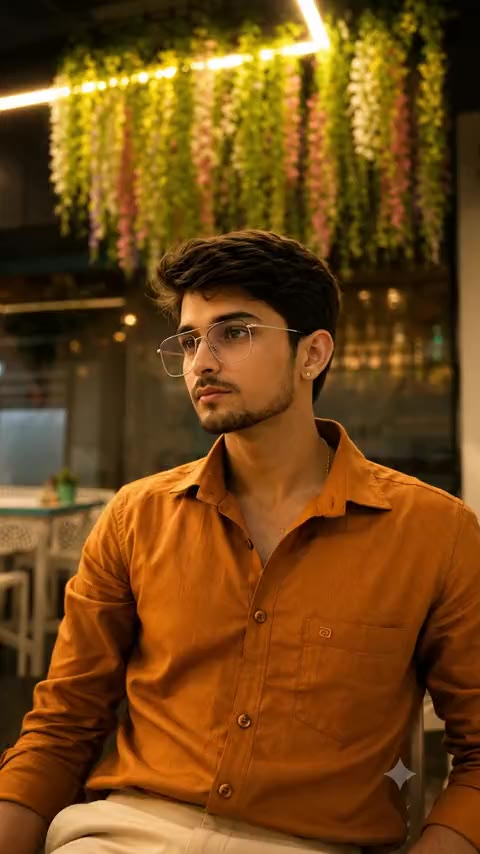
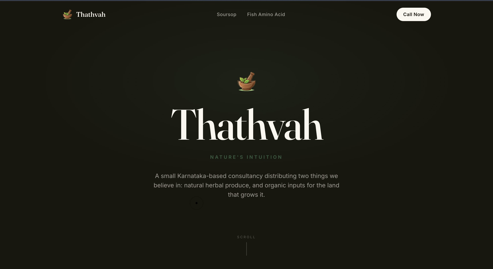
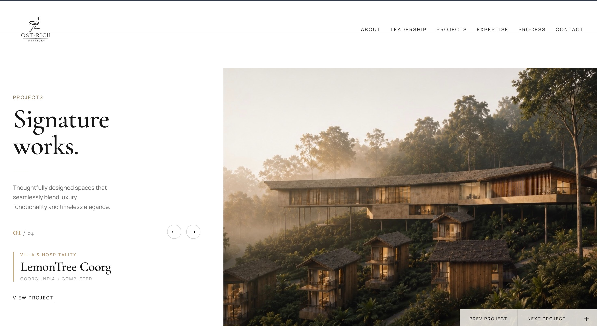

Trained to read balance sheets. Built to ship products.
I'm Shree — a Chartered Accountancy trainee designing and building AI-assisted digital products, where financial judgment and technical execution meet.

I think in numbers.
I build in systems.
Chartered Accountancy trains you to find the number that actually matters — the real constraint underneath a problem, not the one that looks urgent. That habit didn't stay inside spreadsheets. It's become how I approach every product I build: start with the constraint, not the interface.
Outside of CA training, I design and ship web platforms and AI-assisted tools — drawn to problems in luxury real estate and India's blue-collar workforce, where a finance-first read of the situation gives me an angle most developers don't start with.
I'm not choosing between finance and technology. I'm building at the point where they overlap.
Background
Training as a Chartered Accountant — building a foundation in finance, audit, and business fundamentals alongside product and design work.
Approach
Treat every product like a finance problem first: understand the real constraint, then build the simplest thing that solves it — using AI-assisted workflows to move faster without cutting corners.
Interests
AI-assisted product workflows, fintech, real estate technology, and marketplaces built for India's blue-collar workforce.
Products built, and a studio co-founded.
Quality over quantity — this is what's actually shipped, live, or in active build.
Emerald Prox
A cinematic web platform and client CRM for a luxury real-estate channel-partner firm, with tiered proposals and INR commercial costings built in.
The Problem
A luxury real-estate channel-partner firm needed a client-facing presence and internal workflow that matched the caliber of the properties they sell — most tools in the space feel like spreadsheets, not showcases.
The Approach
Rather than bolt a CRM onto a generic template, I designed the client experience and the internal tooling as one connected system — cinematic on the front end, structured underneath it.
What I Built
A cinematic web platform paired with a client CRM, supporting tiered proposals with INR commercial costings built directly into the workflow.
Technology
Doondo
An employer-facing dashboard for blue-collar gig hiring in Bengaluru — handling matching, scheduling, and worker management.
The Problem
Blue-collar hiring in Bengaluru runs largely on word-of-mouth and informal networks — employers have no reliable, structured way to find, schedule, and manage gig workers at scale.
The Approach
Built the employer's side of the marketplace first — the dashboard they'd actually use daily — so the core hiring workflow could be tested and refined before adding growth-side features.
What I Built
An employer-facing dashboard handling worker matching, shift scheduling, and ongoing workforce management for blue-collar gig hiring.
Technology
Thathvah
A brand and web presence for a Karnataka-based consultancy distributing natural soursop products and organic Fish Amino Acid fertilizer.
Live at thathvah.com ↗
The Problem
Small, genuinely natural agri-wellness brands get lost online next to mass-market products making the same "natural" claims with none of the substance behind them. Thathvah needed a site that read as premium and trustworthy without borrowing the usual organic-store visual clichés.
The Approach
Built the brand around restraint and provenance instead of a typical catalog grid — large product photography, plain language about how each product is actually made, and an editorial layout throughout.
What I Built
A two-product brand site — Soursop (herbal wellness) and Fish Amino Acid (organic plant nutrition, made through traditional fermentation) — distributed from Beltangadi, Karnataka.
Technology
Ost-Rich Interiors
A luxury interior design studio I co-founded — shaping communication, coordination, and team building alongside its brand and web presence.
Live at ostrichinteriors.com ↗
The Problem
Luxury interior studios often market with spectacle — heavy finishes, glossy renders — when the clients they're actually chasing want restraint and material honesty. Ost-Rich needed a presence built on its own manifesto: "luxury should feel enveloping, not performative."
The Approach
As one of three co-founders — alongside creative direction and material & finishes direction — my focus is communication, coordination, and team building. That same discipline shaped how the studio presents itself online: composed and unhurried, nothing announcing itself.
What I Built
The studio's brand and web presence — manifesto, philosophy, and process laid out in full, real project work including LemonTree Coorg (villa & hospitality, Coorg — completed), and a signature-qualities system running through the whole site.
Technology
Finance
Technology
AI
Product
What I bring to a build.
Click a row to expand.
How this came together.
Where it started
Learning to read numbers as a language for how businesses actually work — the starting discipline behind everything since.
Chartered Accountancy
Training as a Chartered Accountant — the discipline of finding the constraint that actually matters, before touching a solution.
Commercial thinking
Financial and commercial reasoning applied to real business problems — costing, structure, and analysis, not just theory.
Learning to build
Picked up the tools to build what I could previously only analyze — front-end engineering, platforms, product design.
Building faster
AI-assisted workflows became how I move from idea to shipped product — without cutting corners on the thinking underneath it.
Where it's headed
Now building real products and ventures — Emerald Prox, Doondo, Thathvah, and Ost-Rich Interiors — where financial judgment and technical execution meet.